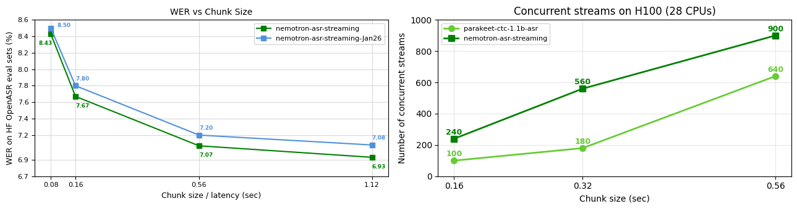

Nemotron ASR Streaming
This page describes how to use the nemotron-speech-streaming-en-0.6b in sherpa-onnx.
The model supports 4 different chunk sizes: 80ms, 160ms, 560ms, and 1120ms. For each chunk size, there is a corresponding ONNX model. The following table lists the model for each chunk size:
Model |
Chunk size |
URL |
|
80 ms |
|
|
160 ms |
|
|
560 ms |
|
|
1120 ms |
Hint
The larger the chunk size, the higher the accuracy.
The following figure is from https://huggingface.co/nvidia/nemotron-speech-streaming-en-0.6b.
{kind=link}

The following shows how to use the model with chunk size 560ms
sherpa-onnx-nemotron-speech-streaming-en-0.6b-560ms-int8-2026-04-25 (English)
Export to ONNX
In case you want to export the model by yourself, please see the export script at
For normal users, you don’t need to care about the export step. Just use the pre-exported model from us.
Pre-built Android APK for real-time speech recognition
Please visit https://k2-fsa.github.io/sherpa/onnx/android/apk.html and search for nemotron-speech-streaming-en-0.6b.
For instance, you can select sherpa-onnx-1.12.40-arm64-v8a-asr-en-nemotron-speech-streaming-en-0.6b-560ms-int8-2026-04-25.apk
for Android ABI arm64-v8a.
Hint
Please always use the latest version.
Download the model
Please use the following command to download the model:
wget https://github.com/k2-fsa/sherpa-onnx/releases/download/asr-models/sherpa-onnx-nemotron-speech-streaming-en-0.6b-560ms-int8-2026-04-25.tar.bz2
tar xvf sherpa-onnx-nemotron-speech-streaming-en-0.6b-560ms-int8-2026-04-25.tar.bz2
rm sherpa-onnx-nemotron-speech-streaming-en-0.6b-560ms-int8-2026-04-25.tar.bz2
ls -lh sherpa-onnx-nemotron-speech-streaming-en-0.6b-560ms-int8-2026-04-25
You should see the following output:
ls -lh sherpa-onnx-nemotron-speech-streaming-en-0.6b-560ms-int8-2026-04-25
total 1296904
-rw-r--r--@ 1 fangjun staff 6.9M 25 Apr 18:33 decoder.int8.onnx
-rw-r--r--@ 1 fangjun staff 623M 25 Apr 18:33 encoder.int8.onnx
-rw-r--r--@ 1 fangjun staff 1.7M 25 Apr 18:33 joiner.int8.onnx
-rw-r--r--@ 1 fangjun staff 159B 25 Apr 18:34 README.md
drwxr-xr-x@ 6 fangjun staff 192B 25 Apr 18:34 test_wavs
-rw-r--r--@ 1 fangjun staff 8.7K 25 Apr 18:25 tokens.txt
Decode a wave file
Please use the following command to decode a wave file:
build/bin/sherpa-onnx \
--encoder=./sherpa-onnx-nemotron-speech-streaming-en-0.6b-560ms-int8-2026-04-25/encoder.int8.onnx \
--decoder=./sherpa-onnx-nemotron-speech-streaming-en-0.6b-560ms-int8-2026-04-25/decoder.int8.onnx \
--joiner=./sherpa-onnx-nemotron-speech-streaming-en-0.6b-560ms-int8-2026-04-25/joiner.int8.onnx \
--tokens=./sherpa-onnx-nemotron-speech-streaming-en-0.6b-560ms-int8-2026-04-25/tokens.txt \
./sherpa-onnx-nemotron-speech-streaming-en-0.6b-560ms-int8-2026-04-25/test_wavs/0.wav
The output of the above command is given below:
/Users/fangjun/open-source/sherpa-onnx/sherpa-onnx/csrc/parse-options.cc:Read:373 build/bin/sherpa-onnx --encoder=./sherpa-onnx-nemotron-speech-streaming-en-0.6b-560ms-int8-2026-04-25/encoder.int8.onnx --decoder=./sherpa-onnx-nemotron-speech-streaming-en-0.6b-560ms-int8-2026-04-25/decoder.int8.onnx --joiner=./sherpa-onnx-nemotron-speech-streaming-en-0.6b-560ms-int8-2026-04-25/joiner.int8.onnx --tokens=./sherpa-onnx-nemotron-speech-streaming-en-0.6b-560ms-int8-2026-04-25/tokens.txt ./sherpa-onnx-nemotron-speech-streaming-en-0.6b-560ms-int8-2026-04-25/test_wavs/0.wav
OnlineRecognizerConfig(feat_config=FeatureExtractorConfig(sampling_rate=16000, feature_dim=80, low_freq=20, high_freq=-400, dither=0, normalize_samples=True, snip_edges=False), model_config=OnlineModelConfig(transducer=OnlineTransducerModelConfig(encoder="./sherpa-onnx-nemotron-speech-streaming-en-0.6b-560ms-int8-2026-04-25/encoder.int8.onnx", decoder="./sherpa-onnx-nemotron-speech-streaming-en-0.6b-560ms-int8-2026-04-25/decoder.int8.onnx", joiner="./sherpa-onnx-nemotron-speech-streaming-en-0.6b-560ms-int8-2026-04-25/joiner.int8.onnx"), paraformer=OnlineParaformerModelConfig(encoder="", decoder=""), wenet_ctc=OnlineWenetCtcModelConfig(model="", chunk_size=16, num_left_chunks=4), zipformer2_ctc=OnlineZipformer2CtcModelConfig(model=""), nemo_ctc=OnlineNeMoCtcModelConfig(model=""), t_one_ctc=OnlineToneCtcModelConfig(model=""), provider_config=ProviderConfig(device=0, provider="cpu", cuda_config=CudaConfig(cudnn_conv_algo_search=1), trt_config=TensorrtConfig(trt_max_workspace_size=2147483647, trt_max_partition_iterations=10, trt_min_subgraph_size=5, trt_fp16_enable="True", trt_detailed_build_log="False", trt_engine_cache_enable="True", trt_engine_cache_path=".", trt_timing_cache_enable="True", trt_timing_cache_path=".",trt_dump_subgraphs="False" )), tokens="./sherpa-onnx-nemotron-speech-streaming-en-0.6b-560ms-int8-2026-04-25/tokens.txt", num_threads=1, warm_up=0, debug=False, model_type="", modeling_unit="cjkchar", bpe_vocab=""), lm_config=OnlineLMConfig(model="", scale=0.5, lodr_scale=0.01, lodr_fst="", lodr_backoff_id=-1, shallow_fusion=True), endpoint_config=EndpointConfig(rule1=EndpointRule(must_contain_nonsilence=False, min_trailing_silence=2.4, min_utterance_length=0), rule2=EndpointRule(must_contain_nonsilence=True, min_trailing_silence=1.2, min_utterance_length=0), rule3=EndpointRule(must_contain_nonsilence=False, min_trailing_silence=0, min_utterance_length=20)), ctc_fst_decoder_config=OnlineCtcFstDecoderConfig(graph="", max_active=3000), enable_endpoint=True, max_active_paths=4, hotwords_score=1.5, hotwords_file="", decoding_method="greedy_search", blank_penalty=0, temperature_scale=2, rule_fsts="", rule_fars="", reset_encoder=False, hr=HomophoneReplacerConfig(lexicon="", rule_fsts=""))
Start to create recognizer
Recognizer created in 0.87634 s
./sherpa-onnx-nemotron-speech-streaming-en-0.6b-560ms-int8-2026-04-25/test_wavs/0.wav
Number of threads: 1, Elapsed seconds: 1.1, Audio duration (s): 6.6, Real time factor (RTF) = 1.1/6.6 = 0.16
After early nightfall the yellow lamps would light up here and there the squalid quarter of the brothels
{ "text": " After early nightfall the yellow lamps would light up here and there the squalid quarter of the brothels", "tokens": [" A", "fter", " ear", "ly", " n", "ight", "f", "all", " the", " y", "e", "llow", " l", "am", "ps", " w", "ould", " l", "ight", " up", " he", "re", " and", " the", "re", " the", " s", "qu", "al", "id", " qu", "ar", "ter", " of", " the", " br", "oth", "els"], "timestamps": [0.56, 0.56, 0.72, 1.12, 1.20, 1.20, 1.52, 1.52, 1.92, 2.24, 2.24, 2.24, 2.32, 2.32, 2.32, 2.56, 2.56, 2.88, 2.88, 2.96, 3.36, 3.36, 3.44, 3.68, 3.68, 4.48, 4.56, 4.56, 4.64, 4.80, 5.04, 5.04, 5.12, 5.20, 5.28, 5.60, 5.60, 5.84], "ys_probs": [], "lm_probs": [], "context_scores": [], "segment": 0, "words": [], "start_time": 0.00, "is_final": false, "is_eof": false}
Real-time speech recognition from a microphone
Please use the following command for real-time speech recognition with a microphone:
build/bin/sherpa-onnx-microphone \
--encoder=./sherpa-onnx-nemotron-speech-streaming-en-0.6b-560ms-int8-2026-04-25/encoder.int8.onnx \
--decoder=./sherpa-onnx-nemotron-speech-streaming-en-0.6b-560ms-int8-2026-04-25/decoder.int8.onnx \
--joiner=./sherpa-onnx-nemotron-speech-streaming-en-0.6b-560ms-int8-2026-04-25/joiner.int8.onnx \
--tokens=./sherpa-onnx-nemotron-speech-streaming-en-0.6b-560ms-int8-2026-04-25/tokens.txt